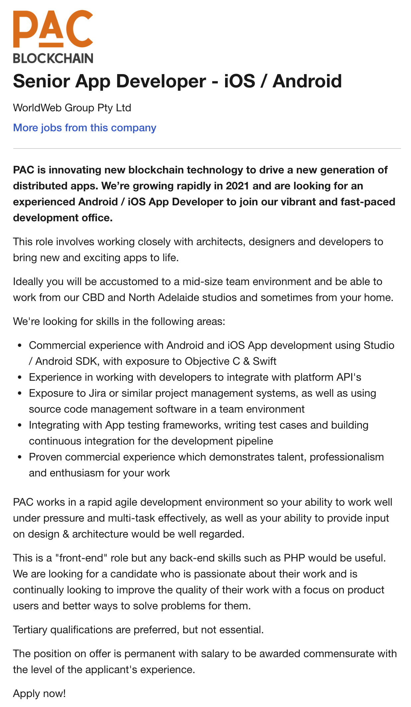

The job I have selected is a far in the future aspiration, but it appeals to me as it sounds varied and interesting and always evolving. It would be very satisfying to have the skills and experience to succeed in this type of role.
Senior App Developer - iOS/Android

Job Description
PAC Blockchain is looking for an experienced app developer with skills in both Android and iOS app development that works well in a team and autonomously with the abilities to multi-task and hit deadlines in a fast-paced environment. The candidate must be passionate about app development with a focus on the user experience.
Job Description Link
Skills Required
- Commercial experience with Android and iOS App development using Studio / Android SDK, with exposure to Objective C & Swift - Knowledge and experience using the collection of software development tools and libraries Android Studio package created by Google that incorporates Android SDK, and supports languages such as C++, Java and Kotlin.Experience and understanding of two main programming languages for iOS - Objective C & Swift. Swift being the newer, improved, more stable and secure language with simpler syntax making it easier to read and write.
- Experience in working with developers to integrate with platform API's - Experience working in a team of developers and with an Application Programming Interface which involves combining two or more different, but symbiotic groups, through programmatically expendable service, resulting in a foundation for automated communications between the different groups.
- Exposure to Jira or similar project management systems, as well as using source code management software in a team environment - Ability to manage projects using agile project management methodologies and Jira (bug tracking system) as well as using source code management software (e.g. GitHub or Visual Studio Code (VSC).
- Integrating with App testing frameworks, writing test cases and building continuous integration for the development pipeline - Experience with app testing tools (e.g Appium, Earl Grey, Calabash) and running multiple daily integration of work and updates via the main branch of source code for the improvement of feedback, detection of errors, improved team involvement and collaboration and reduction of unforeseen issues at the end of the development lifecycle.
- Proven commercial experience which demonstrates talent, professionalism and enthusiasm for your work - Proven track record of high-quality applications already on the market that has been successful and marketable.
- Tertiary qualifications are desirable but not a requirement.Experience is valued more than a piece of paper.
My Current Skills
In regard to the skills and qualifications required in the above job description, I have little, but experience in the corporate environment, I have over twenty years. I have good analytical, communication and problem-solving skills, experience leading small teams, training employees and managing conflict resolution. I have sufficient computer / IT knowledge and skills and an ability to learn new concepts and programs quickly. My enthusiasm, curiosity and determination set me on the right path to achieve most things I put my mind toward.
Learning Journey
Choose formal qualifications such as:
- Computer Programming;
- Bachelor in Computer Science (3 years full-time).
- Android Studio/SDK
- Agile Project Management
- Code Source Management e.g. Github
- Jira
- Appium, Earl Grey and/or Calabash
Learn the following systems and programs:
Once I have the basic to intermediate learnings, I would apply for junior dev roles to build my portfolio to gain experience and continue to learn and develop my skills to advanced levels. I estimate the full learning journey to take approx. 5 – 7 years (full-time) to obtain the skills and experience to be at the Senior level to apply for this job.
Links to Courses
- https://online.rmit.edu.au/topic/learn-swift-programming
- https://www.rmit.edu.au/study-with-us/levels-of-study/undergraduate-study/bachelor-degrees/bachelor-of-computer-science-bp094
- https://developer.android.com/courses
- https://www.rmit.edu.au/study-with-us/levels-of-study/short-courses/agile-for-project-management
- https://lab.github.com/
- https://training.atlassian.com/jira-basics
- https://github.com/google/EarlGrey
- https://bitbar.com/blog/calabash-tutorial-for-mobile-app-testing/